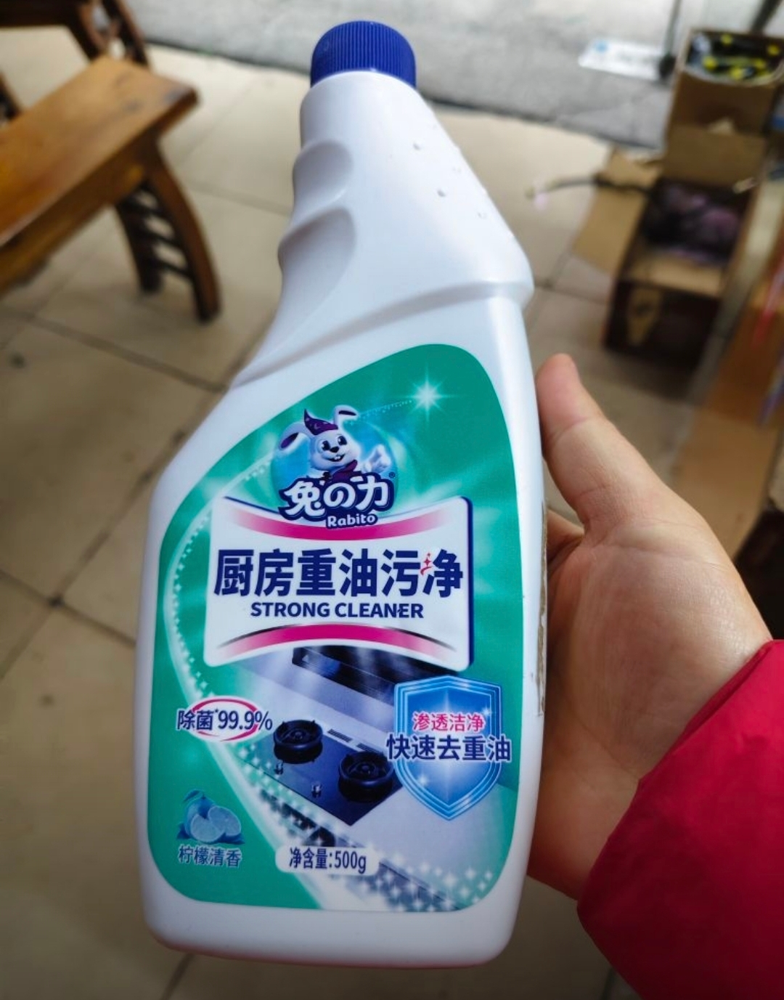
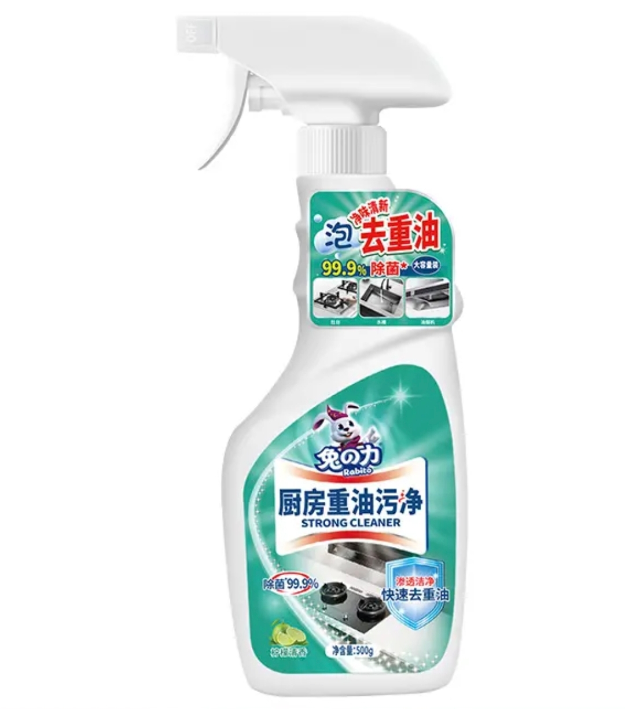

兔の力 Rabito · 官方旗舰店
厨房重油污净（500g 喷雾）
S3 挖掘场景 · 独立调试产物 · 品类：家居清洁
渗透洁净 · 快速去重油
除菌 99.9%*
柠檬清香不刺鼻
灶台 / 水槽 / 油烟机
500g 大容量


品类风险（内容侧核验）：油污净品类存在信任危机——"碳化老油擦不掉"打假测评 1.6k 赞；同时多条实证验证"轻油污效果好、不刺鼻"。策略：先实证再承诺，三段实测是标配形式。
S3 输入（简版）：主攻人群 = 家庭主厨（常做饭）× 租房退租党；主攻买点 = 渗透去油实测有效 · 清香不刺鼻 · 一瓶管全厨房。以下场景全部来自内容侧先探 + 四问填充。
场景需求卡 · 主攻 3 / 可测试 1
SC-01 油烟机灶台 · 三段实测主攻
触发周末厨房大扫除，看着积油犯愁。
画面灶台/油烟机积油特写 → 喷泡沫覆盖 → 静置 5 分钟计时 → 抹布一擦透亮，同机位前后对比。
痛点陈年油垢擦不动、刷到手酸。
拍法：统一条件三段式实测（品类信任战标配形式）。口播："说能擦掉老油污的油污净，我实测给你看"
已验证 品类测评主流形式；打假测评 1.6k 赞反衬实证价值；"泡沫变色分解、透亮露出底色"实测
SC-02 租房退租 · 押金保卫战主攻
触发退租前一天，厨房老油要清理干净。
画面出租屋厨房（油垢重）→ 喷、等、擦 → 房东视频验收"可以，押金退你"；结尾亮出省下的保洁费。
痛点老油被扣押金、请保洁 200 起。
拍法：退租 Vlog 叙事 + 前后对比。口播："退租前用它，押金一分不少拿回来"
已验证 退租清洁是抖音常青叙事；品类实测可支撑"老油也能擦"
SC-03 刺鼻对比 · 清香实测主攻
触发日常清洁担心呛鼻、口罩戴不戴。
画面两瓶清洁剂并排喷（一瓶呛鼻捂鼻，一瓶柠檬香），主角不戴口罩完成全厨房清洁。
痛点清洁剂呛人、戴了口罩也难受。
拍法：并排对比 + 无口罩实测。口播："清洁剂不用捂着鼻子用，柠檬香还去油"
已验证 "不呛人全程不用戴口罩"用户验证点；刺鼻是品类高频差评
SC-04 年末大扫除 · 一瓶管全屋可测试
触发春节前/季度大扫除。
画面灶台→水槽→台面→电器快切，一瓶在手逐场景擦亮，结尾全家福。
痛点油污点多、买一堆清洁剂。
拍法：场景快切 + 大容量特写。口播："年末大扫除，一瓶管整个厨房"
已验证 大扫除内容季节性爆发；品类词存在